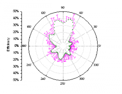
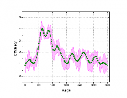

関連動画はこちら：グラフにエラーバーの追加
関連動画はこちら：グラフにエラーバーの追加
 関連動画はこちら：グラフにエラーバーの追加
関連動画はこちら：グラフにエラーバーの追加
Originでは、グラフにエラーバーを追加して、データの誤差や不確かさを示すことができます。2Dグラフと3Dグラフの両方でエラーバーをカスタマイズできます。
2Dグラフでは、次の操作を実行できます。
|
|
3Dグラフでは、次の操作を実行できます。
|
|
 |
 |
 |
エラーバーはボックスチャートの標準機能であり、ボックスチャートの作成時に自動的に追加されます。ボックスチャートのエラーバー（ヒゲ）を編集するには、作図の詳細のボックスチャートタブと線タブのオプションを使います。 |
この方法では、グラフを作成する前にワークシートの列のXY属性を設定します。 指定された各エラーバーデータセットは、それが関連付けられているYデータセットのデータの右側にある必要があります（例：Y1、yEr1、Y2、yEr2、Y3、yEr3など）。
作図のセットアップダイアログ(Originワークブックの場合)または作図データの選択ダイアログ(Excelワークブックの場合)を使ってデータセットをエラーバーとしてプロットします。これらの2つのダイアログでは、ワークシート列のプロット指定や相対的な列の位置に関係なく、任意の列をエラーバーデータセットとして指定できます。
Note:
|
作図の詳細ダイアログで既存データセットから3Dグラフにエラーバーを追加します。この方法では、エラーデータは同じワークシート（ワークシートデータの場合）または同じ行列シート内の行列オブジェクトにあるデータ（行列データの場合）である必要があります。
ワークシートデータから作成された3D棒グラフ、3D トラジェクトリ、3D散布図あるいは、行列データから作成された3D曲面図、3D棒グラフ、3D散布図はエラーバーを追加することが可能です。
手順は次のとおりです。
3Dプロットに対するエラーバーは、ワークシートから作成された3D散布図と3Dトラジェクトリ以外ではZ軸方向にのみ作図可能です。これら2つのプロットでは、X、Y、Z全方向にエラーバーがあります。
エラーバーは、グループ化縦棒(下図)などのグループ化したプロットでもサポートされています。このグラフは、メニューから 作図：カテゴリカル を選択して作図できます。
このようなグラフを作図するときに、データセットに誤差、分散、不確かさのある列が含まれている場合は、データ列欄に含めるか、Yエラー欄に直接入力する必要があります。
ただし、グラフがすでに作成されている場合は、この列をプロットに追加することもできます。このような場合、グループ化したグラフの隅にある錠前アイコンをクリックし「パラメータの変更」を選択することで、エラーデータを追加できます。このとき、作図ダイアログを使用して追加の入力データを指定できます。
データセット統計を計算することで、2Dグラフにエラーバーを追加できます。
次のどちらかの方法でエラーバー値を作成します。
データプロットにエラーバーが追加されたとき、エラーデータが元データのワークシート上に新しく追加されます。 列にはエラーバーであることを示すコメントが表示されます。 エラーバーの計算に使用された式は、値の設定ダイアログに表示されます。
2Dグラフと3Dグラフについて作図の詳細ダイアログで、エラーバーをカスタマイズできます。
作図の詳細ダイアログの左側パネルにあるエラーバーデータに対応するプロットの下に、エラーバーデータが表示されます。エラーバーアイコンが選択されると、エラーバータブがダイアログボックスの右側に表示されます。
このタブでは次のことが可能です。
Note: 極座標グラフでは、「r」係数で測定されたエラーバーのみエラーの線として描画できます。
元のプロットのアイコンを作図の詳細ダイアログの左のパネルで選択すると、エラーバータブが右側に表示されます。
このタブでは次のことが可能です。